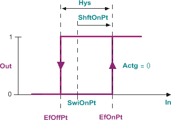
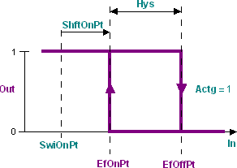

[SWI_2PH] On/off switch with adjustable switch-on point and hysteresis
Function block SWI_2PH generates a binary output signal based on a comparison of the input signal and the switch-on and switch-off point, the switch-on point shift and the hysteresis.
SWI_2PH generates a binary output signal based on a comparison of the input signal and the switch-on and switch-off point, the switch-on point shift and the hysteresis.
SWI_2PH generates the binary output signal based on a comparison of the input signal [In] and the effective switching points [EffOnPt] and [EffOffPt] defined by the switch-on point [SwiOnPt], hysteresis [Hys], and the switch-on point shift [ShSwiOn].
The hysteresis [Hys] defines the switching difference between the effective switching points [EfOnPt] and [EfOffPt].
Switch-on point shift [ShftOnPt] allows for maintaining hysteresis [Hys] by shifting in parallel the effective switching points [EfOnPt] and [EfOffPt] relative to the switch-on point [SwiOnPt].
The effective switch-on point [EfOnPt] is defined by the switch-on point [SwiOnPt] and the switch-on point shift [ShftOnPt].
The effective switch-off point [EfOffPt] is given by the hysteresis [Hys] relative to the effective switch-on point [EfOnPt].
Enabling and disabling the function
The function can be enabled/disabled via [EnFnct].
Integrated functions
- Enabling and disabling the function
- Selectable direction of control action
- Adjustable switch-on point shift
- Adjustable hysteresis
Direction of control action
The direction of control action is defined by [Actg].
Direct acting ([Actg] = 0)

- If the value at input [In] is greater than the sum of [SwiOnPt] and [ShftOnPt], value 1 is issued at output [Out].
- If the sum of [SwiOnPt] and [ShftOnPt] minus [Hys] is less than the sum of [SwiOnPt] and [ShftOnPt], no change occurs.
- If the value at input [In] is greater than the sum of [SwiOnPt] and [ShftOnPt] minus [Hys], value 0 is issued at output [Out].
Reverse acting ([Actg] = 1)

- If the value at input [In] is smaller than the sum of [SwiOnPt] and [ShftOnPt], value 1 is issued at output [Out].
- If the value at input [In] is greater than the sum of [SwiOnPt] and [ShftOnPt] and smaller than the sum of [SwiOnPt], [ShftOnPt], and [Hys], no change occurs.
- If the value at input [In] is greater than the sum of [SwiOnPt], [ShftOnPt], and [Hys], value 0 is issued at output [Out].
Input | Description | Data type | Default value |
|---|---|---|---|
EnFnct | Enable function Enables the function. | Boolean | 1 |
0 - The function is disabled. | |||
In | Input | Real | 0.0 |
SwiOnPt | Switch-on point | Real | 0.0 |
Hys | Hysteresis | Real | 1.0 |
ShftOnPt | Shift of switch-on point | Real | 0.0 |
Actg | Control action Determines the relationship between manipulated and control variable. | Boolean | 1 |
0 - Direct effect, such as cooling or dehumidification. | |||
Output | Description | Data type | Default value |
|---|---|---|---|
Out | Output | Boolean | 0 |
EfOnPt | Effective on-point | Real | 0.0 |
EfOffPt | Effective off-point | Real | 0.0 |
- Heating and cooling control to disable (add or remove) components.
- General: Execution of switching functions depends on a specific signal value.
SWI_2PH is processed starting with the first process cycle using the values pending at the inputs. If value [In] is between the effective switch-on and switch-off point during start-up, the output [Out] is set to 0.